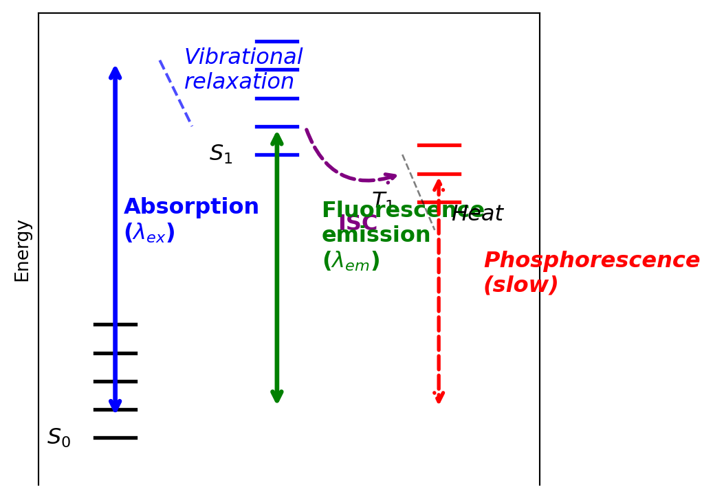

Code
fig, ax = plt.subplots(figsize=get_size(14, 10))
# Energy levels
S0_0 = 0
S0_v = [0, 0.3, 0.6, 0.9, 1.2]
S1_0 = 3.0
S1_v = [0, 0.3, 0.6, 0.9, 1.2]
T1_0 = 2.5
T1_v = [0, 0.3, 0.6]
# Draw S0 vibrational levels
for i, v in enumerate(S0_v):
y = S0_0 + v
ax.plot([0, 0.5], [y, y], 'k-', linewidth=2)
if i == 0:
ax.text(-0.3, y, '$S_0$', ha='right', va='center')
# Draw S1 vibrational levels
for i, v in enumerate(S1_v):
y = S1_0 + v
ax.plot([2, 2.5], [y, y], 'b-', linewidth=2)
if i == 0:
ax.text(1.7, y, '$S_1$', ha='right', va='center')
# Draw T1 vibrational levels
for i, v in enumerate(T1_v):
y = T1_0 + v
ax.plot([4, 4.5], [y, y], 'r-', linewidth=2)
if i == 0:
ax.text(3.7, y, '$T_1$', ha='right', va='center')
# Absorption (vertical arrow, blue)
ax.annotate('', xy=(0.25, S1_0 + 1.0), xytext=(0.25, S0_0 + 0.2),
arrowprops=dict(arrowstyle='<->', color='blue', lw=2.5))
ax.text(0.35, (S1_0 + 1.0 + S0_0 + 0.2)/2, 'Absorption\n($\\lambda_{ex}$)', color='blue', weight='bold')
# Vibrational relaxation S1 (wavy arrow)
ax.plot([0.8, 1.2], [S1_0 + 1.0, S1_0 + 0.3], 'b--', linewidth=1.5, alpha=0.7)
ax.text(1.1, S1_0 + 0.7, 'Vibrational\nrelaxation', style='italic', color='blue')
# Intersystem crossing (curved arrow)
ax.annotate('', xy=(3.8, T1_0 + 0.3), xytext=(2.6, S1_0 + 0.3),
arrowprops=dict(arrowstyle='->', color='purple', lw=2,
connectionstyle="arc3,rad=0.5", linestyle='dashed'))
ax.text(3.0, 2.2, 'ISC', color='purple', weight='bold')
# Fluorescence emission (vertical arrow, green)
ax.annotate('', xy=(2.25, S0_0 + 0.3), xytext=(2.25, S1_0 + 0.3),
arrowprops=dict(arrowstyle='<->', color='green', lw=2.5))
ax.text(2.8, (S1_0 + 0.3 + S0_0 + 0.3)/2, 'Fluorescence\nemission\n($\\lambda_{em}$)', color='green', weight='bold')
# Phosphorescence emission (vertical arrow, red)
ax.annotate('', xy=(4.25, S0_0 + 0.3), xytext=(4.25, T1_0 + 0.3),
arrowprops=dict(arrowstyle='<->', color='red', lw=2, linestyle='dashed'))
ax.text(4.8, (T1_0 + 0.3 + S0_0 + 0.3)/2, 'Phosphorescence\n(slow)', color='red', weight='bold', style='italic')
# Heat dissipation from T1
ax.plot([3.8, 4.2], [T1_0 + 0.5, T1_0 - 0.3], 'k--', linewidth=1, alpha=0.5)
ax.text(4.4, T1_0 - 0.2, 'Heat', style='italic')
ax.set_xlim(-0.7, 5.5)
ax.set_ylim(-0.5, 4.5)
ax.set_ylabel('Energy')
ax.set_xticks([])
ax.spines['bottom'].set_visible(False)
ax.spines['left'].set_visible(True)
ax.set_yticks([])
plt.tight_layout()
plt.savefig('jablonski.png', dpi=100, bbox_inches='tight')
plt.show()